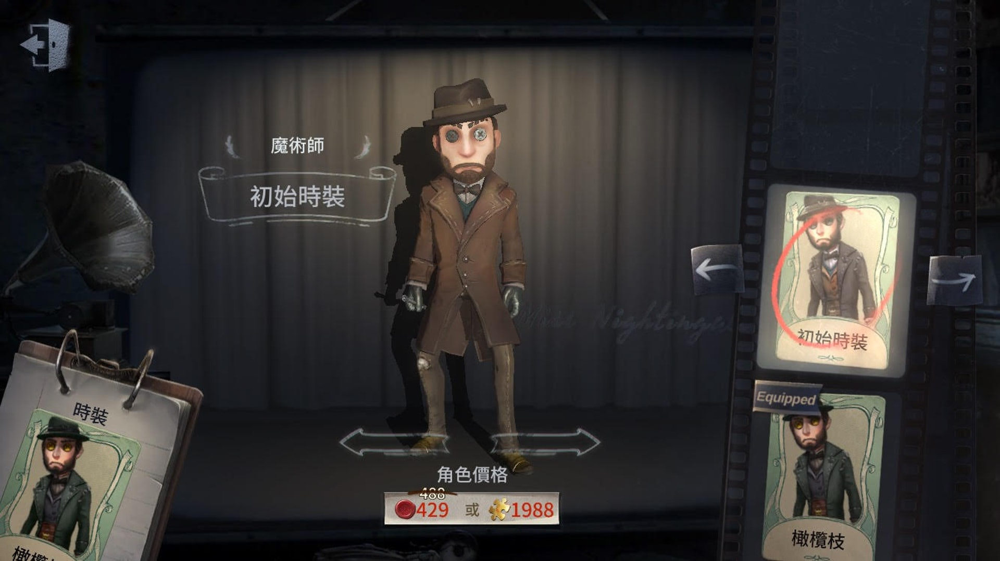
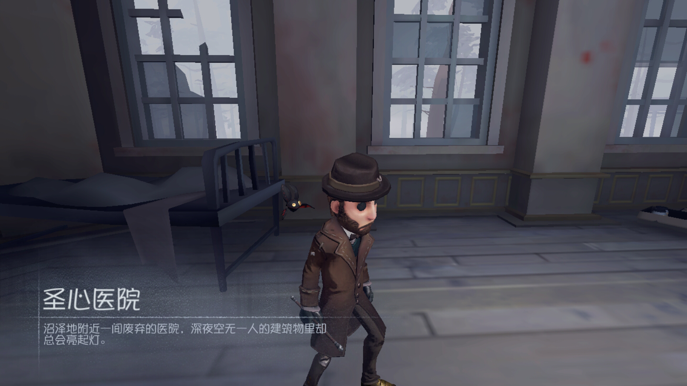

魔術師

【人物介紹】
名字：瑟維‧勒‧羅伊
瑟維·勒·羅伊在比利時開啟了他的魔術生涯，並搬到倫敦開設屬於自己的魔術用品專營店。但這位喜愛人體消失魔術的魔術師並沒有獲得大眾認同，也許在曾經出現過無數知名藝術家的歐利蒂絲莊園裡，他能找到新的表演靈感？
【能力介紹】
騙術演繹：隨身攜帶魔棒，能製造幻象隱匿數秒，但在隱匿過程中受到傷害會觸發恐懼震懾，在隱匿時的移動速度增加30%。
靈活雙手：降低破譯密碼機校準的觸發概率20%，破譯觸發校準時的成功判定區域增加20%。
真假難分：騙術表演讓魔術師狂歡之椅上被救援所需時間增加100%。
初始道具為魔術棒，可使用兩次，使用得好的話有兩次機會可以從監管者手下逃離，但一旦被放上狂歡之椅，隊友較難救援。
